, each an oscillator:
, each an oscillator:  ,
, Derivation
- Coulomb gauge
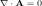
, no sources: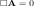
,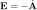
, .
. - In a box of volume
 with periodic conditions, expand
with periodic conditions, expand 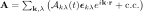
, two transverse polarisations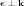
. - The energy
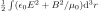
becomes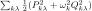
with real canonical pairs built from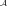
: one oscillator per mode. - Quantise each oscillator,
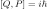
, and introduce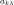
with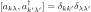
(Dirac 1927):
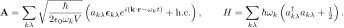
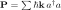
: photons carry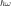
and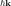
.Vacuum fluctuations
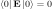
but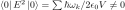
. The "electric field per photon"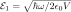
sets the atom–cavity coupling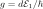
. Differences of zero-point energy between boundary conditions give the Casimir force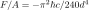
.Worked example
Visible photon (
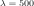
nm) in a 1 µm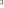
microcavity: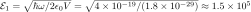
V/m. With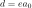
,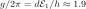
GHz: strong coupling becomes possible in small cavities. Casimir pressure at nm:
nm: 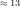
Pa — relevant for MEMS stiction.Engineering applications
Shot noise and the standard quantum limit in photodetection, spontaneous emission (vacuum-stimulated) setting LED/laser noise, Casimir forces in MEMS, microwave photons in superconducting resonators.
Pitfall
A photon is not a localised particle with a wave function in the Schrödinger sense; it is an excitation of a mode, which may be spread over the whole cavity.